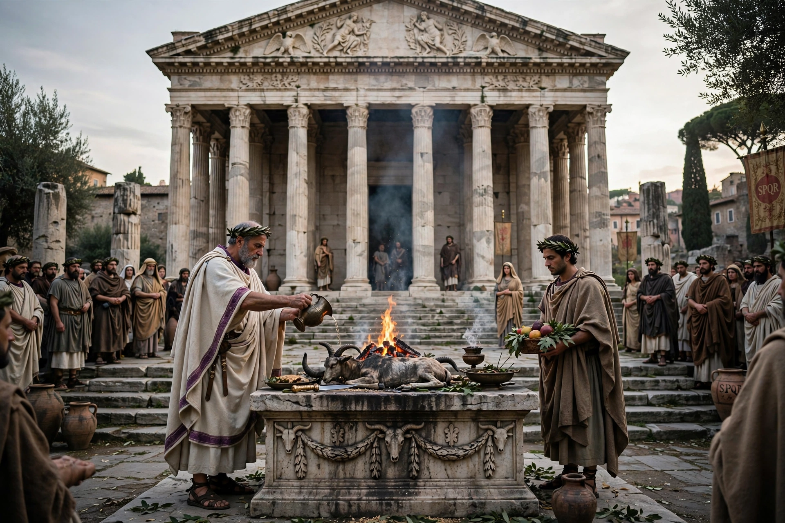

Religion in ancient Rome

Religion in ancient Rome consisted of varying imperial and provincial religious practices, which were followed both by the people of Rome and by those brought under its rule. Roman religion was polytheistic and ritual-centred, concerned less with belief than with correct performance (orthopraxy) to maintain the pax deorum, the "peace of the gods."
1 Gods and cults
2 Priesthoods and rituals
3 Festivals
4 Imperial cult
5 Mystery religions and Christianity
Gods and cults
The Roman pantheon fused native Italic deities with Greek ones: Jupiter, Juno and Minerva formed the Capitoline Triad, joined by Mars, Venus, Apollo, Diana, Mercury, Ceres and others. Households worshipped the Lares and Penates (guardian spirits of home and store-cupboard) and the genius of the paterfamilias. Deities of very specific functions, and abstract personifications such as Fides and Fortuna, abounded.
Priesthoods and rituals
Public religion was administered by priestly colleges: the pontifices headed by the pontifex maximus, the augurs who read omens from birds, the haruspices who examined entrails, the Vestal Virgins who tended Vesta's flame, and the quindecimviri who guarded the Sibylline Books. Sacrifice — usually of animals whose meat was then shared in a feast — vows, processions, and games (ludi) were the central acts of worship.
Festivals
The calendar was dense with festivals: the Lupercalia in February, the Saturnalia in December with its role reversals and gift-giving, the Parentalia honouring ancestors, and numerous feriae marking seasons and deities.
Imperial cult
From Augustus onwards the genius of the emperor, and in the provinces the deified emperor himself, received cult, binding the empire's loyalty to Rome. Refusal to sacrifice could bring groups such as Jews (generally exempted) and Christians into conflict with the state.
Mystery religions and Christianity
Imported cults offering personal salvation — Isis, Mithras, Cybele, and others — flourished in the Empire. Christianity spread from the 1st century AD, was periodically persecuted, was legalised by Constantine's Edict of Milan (313), and under Theodosius I became the state religion, while traditional cults were progressively suppressed in the late 4th century.